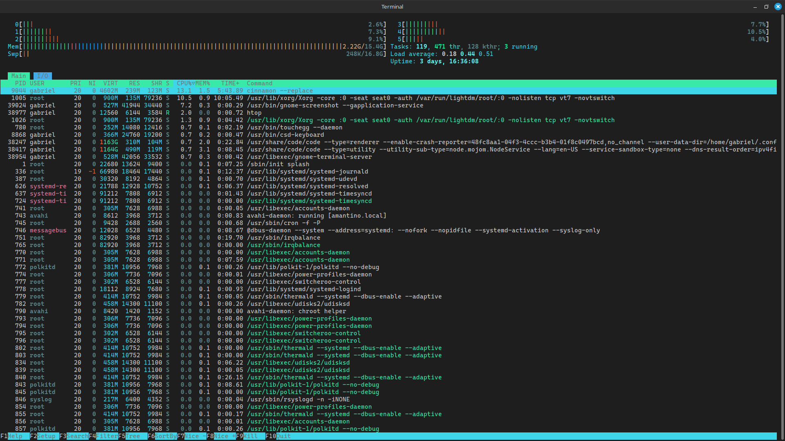
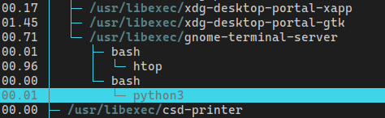
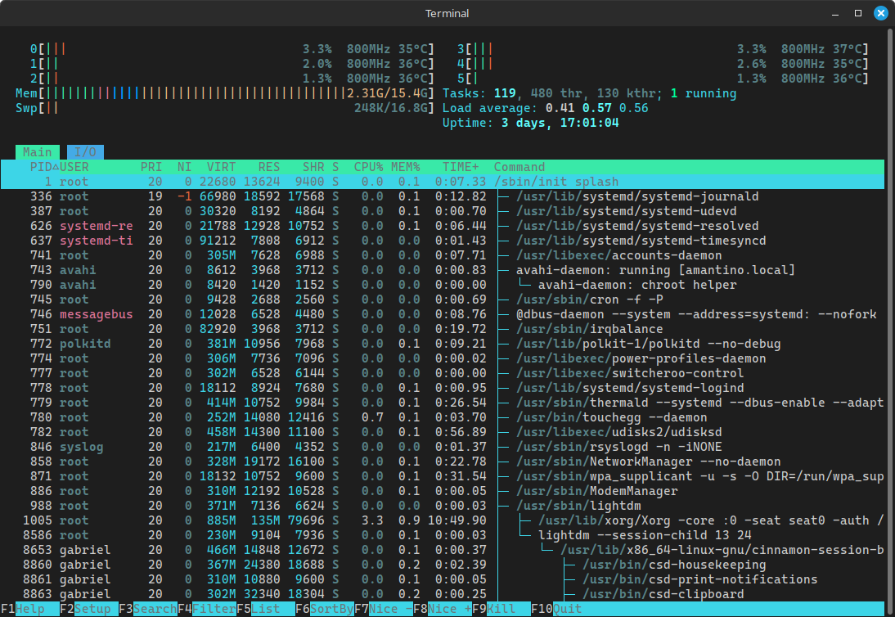
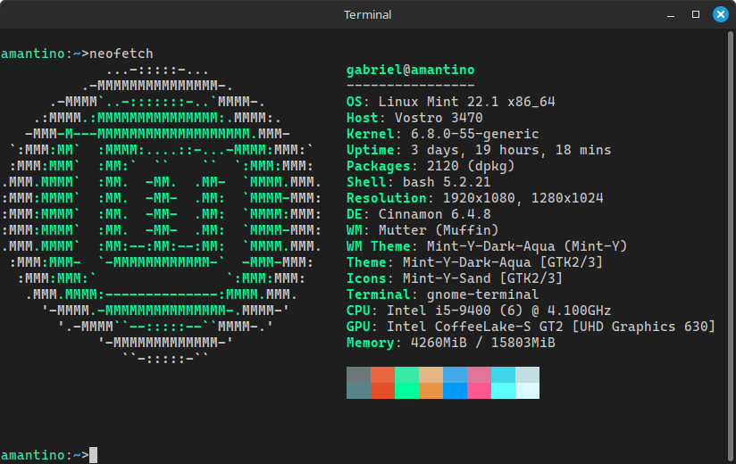
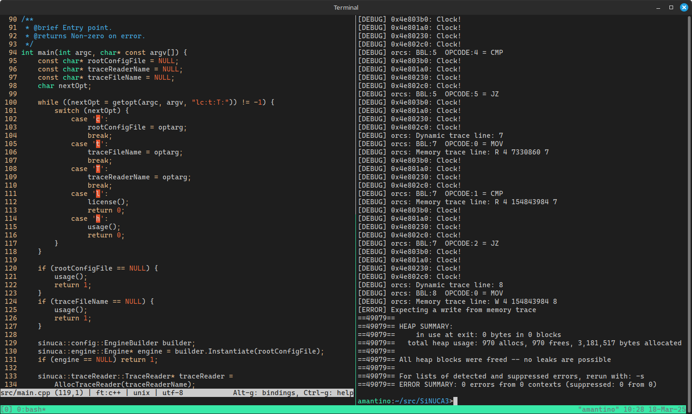
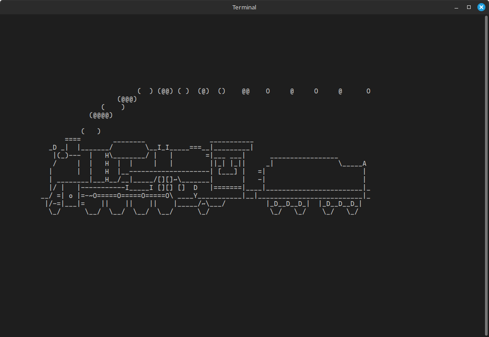

Linux Para Calouros
(Ou o que faltou em aula…)
Falando um pouco mais sobre coisas interessantes que não foram cobertas nas aulas de Linux da Semana de Calouros da Ciência da Computação da UFPR.
Esse post vai dar uma ênfase maior em distros baseadas em Debian (Linux Mint, Ubuntu, etc) porque espera-se que sejam mais comuns e que se você usa outra coisa você provavelmente sabe o que está fazendo.
Qualquer dúvida aqui pode me mandar mensagem ;)
htop e gerenciamento de recursos/tarefas
O htop é um gerenciador de tarefas. Sua interface padrão é algo assim:

Para instalar no Mint/Ubuntu/Debian, sudo apt install htop.
No topo, perceba que há barras mostrando o uso de alguns recursos. As barras numeradas (nesse caso, de 0 a 6) mostram o uso de cada núcleo (virtual) do seu processador. A barra "Mem" mostra o uso de memória RAM e a barra "Swp" mostra o uso do swap (já comentaremos o que é isso). Ao lado temos algumas estatísticas como número de processos rodando e, embaixo, uma tabela com todos os processos e várias informações sobre eles (como uso de memória, processamento, etc).
Por padrão, essa tabela é ordenada pelos processos que estão utilizando mais processamento no momento, então note que ela fica trocando a ordem. Apertando F5, podemos trocar a organização da tabela para mostrar os processos em árvore (de acordo com qual processo iniciou qual processo).
Com o mouse ou as setas do teclado, é possível selecionar processos. Apertando F9, um novo menu se abre com opções de sinais (Sinais são uma forma rudimentar de fazer comunicação entre processos) para enviar para esse processo. Por exemplo: abra um novo terminal e rode o comando python3. Deixe ele parado ali. No htop, procure o comando (vai ser mais fácil usar o "modo árvore" para isso). Ele vai ser filho de um processo bash, filho do processo que roda o seu terminal. Por exemplo, no meu Linux Mint:

Aperte F9 e selecione o sinal padrão SIGTERM. Veja o que acontece no terminal que estava rodando Python. Você matou o processo!
O htop é bastante configurável. Aperte F2 e navegue pelos menus para ver o que pode ser alterado. A minha configuração por exemplo abre em "modo árvore" por padrão e mostra a frequência e temperatura dos núcleos:

Comentando sobre o tal do swap: é uma região do disco que pode ser usada como memória. Normalmente só é usada se você estiver esgotando a sua memória RAM, mas também serve para outras coisas (quando você "hiberna" o computador por exemplo, toda a memória é copiada para o swap e o computador desliga. Quando você liga ele novamente, o Linux percebe que tinha uma memória copiada no swap e copia ela de volta para a RAM. Assim ele consegue "voltar de onde parou").
Comentando sobre memória: você pode perceber que somar os valores que o htop mostra não faz muito sentido. Memória pode parecer algo simples, mas existem diversos jeitos de contar quanta memória está sendo utilizada no sistema, cada um considerando alguma coisa como "usada" e outras não. Por exemplo, normalmente se os processos compartilham memória, essa memória compartilhada não é mostrada no uso de memória de cada processo, mas é mostrada no uso total do sistema.
Além disso, perceba que o campo de "uso de memória virtual" por cada processo é bem estranho. Isso acontece porque os processos pedem memória para o sistema, e o sistema "promete" memória para eles (nisso o uso de memória virtual aumenta), mas não reserva a região de memória física no chip de RAM para o processo até que o processo realmente use essa memória. Em Programação I vocês vão começar a estudar alocação de memória, e em Arquitetura de Computadores e Software Básico vocês vão entender melhor como funciona a memória virtual.
Customização do desktop
O lugar onde a comunidade que customiza o desktop se reúne é o unixporn. Procurando lá você encontra vários materiais e inspiração para customizar o seu desktop. Aqui estão algumas customizações que eu já fiz por exemplo. Uma customização é chamada de "rice" (arroz).
Para começar nesse mundo, a primeira coisa a ser fazer provavelmente é trocar seu window manager, como foi citado em aula. Só isso não é muito complicado: basta instalar o pacote (por exemplo, sudo apt install awesome) e, na tela de login, clicar no ícone para trocar de window manager (depende da distro, no Mint por exemplo é um ícone do lado do usuário).
No mundo dos rices, o YouTube e a internet no geral são os seus melhores amigos! O único jeito certo de aprender a customizar é customizando.
Ultimamente, o meu gosto tem tendido bastante para desktops retrôs.
Um programa que utilizamos bastante nessas fotos é o Neofetch. Ele não serve basicamente para nada, mas mostra informações do seu sistema de um jeito bonitinho no terminal. Por exemplo, o neofetch na minha máquina do laboratório:

Tem vários outros programas parecidos. O nome geralmente termina com "fetch".
Serviços do Sistema
Na maioria das distros modernas, o projeto systemd mantém a maioria das ferramentas que envolvam manutenção do sistema. Uma delas é o sistema de serviços. Um serviço do sistema é um programa (ou conjunto de) que se inicia normalmente no boot e geralmente roda até que o sistema desligue. Por exemplo, o servidor gráfico Xorg é um serviço. A tela de login é um serviço.
O comando systemctl é utilizado para modificar a configuração de serviços. Vamos utilizá-lo para configurar o SSH depois.
Serviços costumam terminar com a letra "d", que significa "daemon" (demônio). O motivo é histórico. Esses programas que ficam rodando o tempo todo costumam ser chamados de demônios.
Servidor de SSH
É comicamente simples configurar um servidor de ssh para acessar uma máquina remotamente. Basta instalar o pacote ssh, e ativar o serviço: sudo systemctl enable sshd. Por padrão, a configuração permite que a máquina seja acessada com senha. Para desativar isso, vá no arquivo /etc/ssh/sshd_config, procure pela linha PasswordAuthentication yes, troque o "yes" por "no", e reinicialize o SSH com o comando sudo systemctl restart sshd.
tmux
O tmux é um programa muito legal que funciona como um emulador de terminal dentro do terminal. Ele tem basicamente dois usos: manter sessões de terminal ativas e abrir várias janelas dentro de um mesmo terminal. Veja na foto o tmux com duas janelas abertas: na esquerda, o meu editor de texto preferido, o micro editando um projeto do HiPES. Na direita, tem um terminal aberto depois de rodar um programa para debuggar o projeto. Perceba que o tmux cria uma barra verde embaixo do terminal:

O tmux também tem aparência e atalhos de teclado customizáveis.
O outro uso além de criar várias janelas é manter sessões abertas. Por exemplo, imagine que você está conectado por SSH e a internet cai. Você perde tudo que estava fazendo, pois o SSH vai matar todos os processos que você iniciou na máquina remota. Se você se conectar via SSH e abrir o tmux, caso a conexão seja perdida, o tmux continuará rodando na máquina remota com tudo o que você estava fazendo salvo. Quando você se conectar novamente, pode rodar tmux attach e continuar de onde parou.
Bônus: sl
O sl é um programa meme que você pode instalar: sudo apt install sl. Basicamente, é comum que eventualmente você tente rodar um comando que digitou errado sem querer, especialmente quando estiver digitando rápido. No caso, é extremamente comum digitar "sl" ao invés de "ls", até porque é um dos comandos mais comuns de se utilizar.
O sl desenha um trem passando pelo seu terminal, e não tem como matar ele com CTRL+C. Agora sempre que você rodar "sl" tentando rodar "ls", você é punido tendo que assistir o trem passar de um lado até o outro do terminal.
